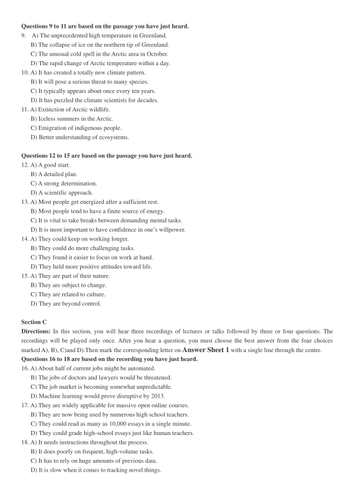
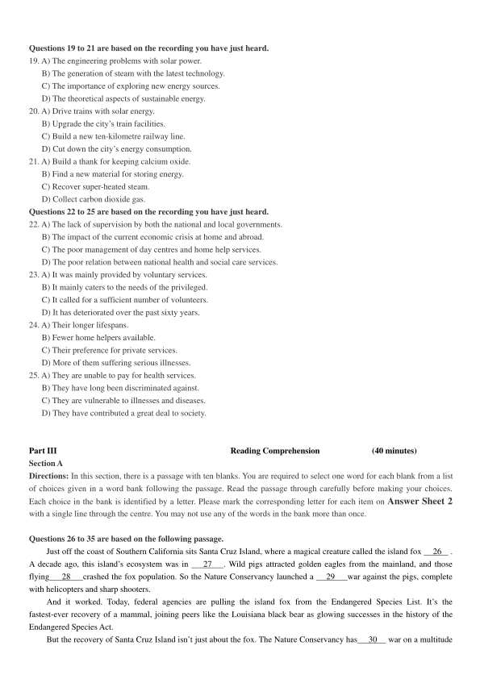

第 1 / 8 页

2018 年12 月大学英语六级考试真题（第1 套）
Part I
Writing
(30 minutes)
Directions: For this part, you are allowed 30 minutes to write an essay on how to balance work and leisure. You should
write at least 150 words but no more than 200 words.
___________________________________________________________________________________________________
___________________________________________________________________________________________________
___________________________________________________________________________________________________
Part II
Listening Comprehension
(30 minutes)
Section A
Directions: In this section, you will hear two long conversations At the end of each conversation, you will hear four
questions. Both the conversation and the questions will be spoken only once. After you hear a question, you must choose the
best answer from the four choices marked A), B), C) and D). Then mark the corresponding letter on Answer Sheet 1 with
a single line through the centre.
Questions1 to 4 are based on the conversation you have just heard.
1.
A) It can benefit professionals and non-professionals alike.
B) It lists the various challenges physicists are confronting.
C) It describes how some mysteries of physics were solved.
D) It is one of the most fascinating physics books ever written.
2.
A) Physicists’ contribution to humanity.
B) Stories about some female physicists.
C) Historical evolution of modern physics.
D) Women’s changing attitudes to physics.
3.
A) By exposing a lot of myths in physics.
B) By describing her own life experiences.
C) By including lots of fascinating knowledge.
D) By telling anecdotes about famous professors.
4.
A) It avoids detailing abstract concepts of physics.
B) It contains a lot of thought-provoking questions.
C) It demonstrates how they can become physicists.
D) It provides experiments they can do themselves.
Questions 5 to 8 are based on the conversation you have just heard.
5.
A) He is too busy to finish his assignment in time.
B) He does not know what kind of topic to write on.
C) He does not understand the professor’s instructions.
D) He has no idea how to proceed with his dissertation.
6.
A) It is too broad.
B) It is a bit outdated.
C) It is challenging.
D) It is interesting.
7.
A) Biography.
B) Nature.
C) Philosophy.
D) Beauty.
8.
A) Improve his cumulative grade.
B) Develop his reading ability.
C) Stick to the topic assigned.
D) List the parameters first.
Section B
Directions: In this section, you will hear two passages. At the end of each passage, you will hear three or four questions.
Both the passage and the questions will be spoken only once. After you hear a question, you must choose the best answer
from the four choices marked A), B), C)and D). Then mark the corresponding letter on Answer Sheet 1 with a single line
through the centre.
查看 / 复制本页文字
2018 年12 月大学英语六级考试真题（第1 套） Part I Writing (30 minutes) Directions: For this part, you are allowed 30 minutes to write an essay on how to balance work and leisure. You should write at least 150 words but no more than 200 words. ___________________________________________________________________________________________________ ___________________________________________________________________________________________________ ___________________________________________________________________________________________________ Part II Listening Comprehension (30 minutes) Section A Directions: In this section, you will hear two long conversations At the end of each conversation, you will hear four questions. Both the conversation and the questions will be spoken only once. After you hear a question, you must choose the best answer from the four choices marked A), B), C) and D). Then mark the corresponding letter on Answer Sheet 1 with a single line through the centre. Questions1 to 4 are based on the conversation you have just heard. 1. A) It can benefit professionals and non-professionals alike. B) It lists the various challenges physicists are confronting. C) It describes how some mysteries of physics were solved. D) It is one of the most fascinating physics books ever written. 2. A) Physicists’ contribution to humanity. B) Stories about some female physicists. C) Historical evolution of modern physics. D) Women’s changing attitudes to physics. 3. A) By exposing a lot of myths in physics. B) By describing her own life experiences. C) By including lots of fascinating knowledge. D) By telling anecdotes about famous professors. 4. A) It avoids detailing abstract concepts of physics. B) It contains a lot of thought-provoking questions. C) It demonstrates how they can become physicists. D) It provides experiments they can do themselves. Questions 5 to 8 are based on the conversation you have just heard. 5. A) He is too busy to finish his assignment in time. B) He does not know what kind of topic to write on. C) He does not understand the professor’s instructions. D) He has no idea how to proceed with his dissertation. 6. A) It is too broad. B) It is a bit outdated. C) It is challenging. D) It is interesting. 7. A) Biography. B) Nature. C) Philosophy. D) Beauty. 8. A) Improve his cumulative grade. B) Develop his reading ability. C) Stick to the topic assigned. D) List the parameters first. Section B Directions: In this section, you will hear two passages. At the end of each passage, you will hear three or four questions. Both the passage and the questions will be spoken only once. After you hear a question, you must choose the best answer from the four choices marked A), B), C)and D). Then mark the corresponding letter on Answer Sheet 1 with a single line through the centre.
第 2 / 8 页

Questions 9 to 11 are based on the passage you have just heard.
9.
A) The unprecedented high temperature in Greenland.
B) The collapse of ice on the northern tip of Greenland.
C) The unusual cold spell in the Arctic area in October.
D) The rapid change of Arctic temperature within a day.
10. A) It has created a totally new climate pattern.
B) It will pose a serious threat to many species.
C) It typically appears about once every ten years.
D) It has puzzled the climate scientists for decades.
11. A) Extinction of Arctic wildlife.
B) Iceless summers in the Arctic.
C) Emigration of indigenous people.
D) Better understanding of ecosystems.
Questions 12 to 15 are based on the passage you have just heard.
12. A) A good start.
B) A detailed plan.
C) A strong determination.
D) A scientific approach.
13. A) Most people get energized after a sufficient rest.
B) Most people tend to have a finite source of energy.
C) It is vital to take breaks between demanding mental tasks.
D) It is most important to have confidence in one’s willpower.
14. A) They could keep on working longer.
B) They could do more challenging tasks.
C) They found it easier to focus on work at hand.
D) They held more positive attitudes toward life.
15. A) They are part of their nature.
B) They are subject to change.
C) They are related to culture.
D) They are beyond control.
Section C
Directions: In this section, you will hear three recordings of lectures or talks followed by three or four questions. The
recordings will be played only once. After you hear a question, you must choose the best answer from the four choices
marked A), B), C)and D).Then mark the corresponding letter on Answer Sheet 1 with a single line through the centre.
Questions 16 to 18 are based on the recording you have just heard.
16. A) About half of current jobs might be automated.
B) The jobs of doctors and lawyers would be threatened.
C) The job market is becoming somewhat unpredictable.
D) Machine learning would prove disruptive by 2013.
17. A) They are widely applicable for massive open online courses.
B) They are now being used by numerous high school teachers.
C) They could read as many as 10,000 essays in a single minute.
D) They could grade high-school essays just like human teachers.
18. A) It needs instructions throughout the process.
B) It does poorly on frequent, high-volume tasks.
C) It has to rely on huge amounts of previous data.
D) It is slow when it comes to tracking novel things.
查看 / 复制本页文字
Questions 9 to 11 are based on the passage you have just heard. 9. A) The unprecedented high temperature in Greenland. B) The collapse of ice on the northern tip of Greenland. C) The unusual cold spell in the Arctic area in October. D) The rapid change of Arctic temperature within a day. 10. A) It has created a totally new climate pattern. B) It will pose a serious threat to many species. C) It typically appears about once every ten years. D) It has puzzled the climate scientists for decades. 11. A) Extinction of Arctic wildlife. B) Iceless summers in the Arctic. C) Emigration of indigenous people. D) Better understanding of ecosystems. Questions 12 to 15 are based on the passage you have just heard. 12. A) A good start. B) A detailed plan. C) A strong determination. D) A scientific approach. 13. A) Most people get energized after a sufficient rest. B) Most people tend to have a finite source of energy. C) It is vital to take breaks between demanding mental tasks. D) It is most important to have confidence in one’s willpower. 14. A) They could keep on working longer. B) They could do more challenging tasks. C) They found it easier to focus on work at hand. D) They held more positive attitudes toward life. 15. A) They are part of their nature. B) They are subject to change. C) They are related to culture. D) They are beyond control. Section C Directions: In this section, you will hear three recordings of lectures or talks followed by three or four questions. The recordings will be played only once. After you hear a question, you must choose the best answer from the four choices marked A), B), C)and D).Then mark the corresponding letter on Answer Sheet 1 with a single line through the centre. Questions 16 to 18 are based on the recording you have just heard. 16. A) About half of current jobs might be automated. B) The jobs of doctors and lawyers would be threatened. C) The job market is becoming somewhat unpredictable. D) Machine learning would prove disruptive by 2013. 17. A) They are widely applicable for massive open online courses. B) They are now being used by numerous high school teachers. C) They could read as many as 10,000 essays in a single minute. D) They could grade high-school essays just like human teachers. 18. A) It needs instructions throughout the process. B) It does poorly on frequent, high-volume tasks. C) It has to rely on huge amounts of previous data. D) It is slow when it comes to tracking novel things.
第 3 / 8 页

Questions 19 to 21 are based on the recording you have just heard.
19. A) The engineering problems with solar power.
B) The generation of steam with the latest technology.
C) The importance of exploring new energy sources.
D) The theoretical aspects of sustainable energy.
20. A) Drive trains with solar energy.
B) Upgrade the city’s train facilities.
C) Build a new ten-kilometre railway line.
D) Cut down the city’s energy consumption.
21. A) Build a thank for keeping calcium oxide.
B) Find a new material for storing energy.
C) Recover super-heated steam.
D) Collect carbon dioxide gas.
Questions 22 to 25 are based on the recording you have just heard.
22. A) The lack of supervision by both the national and local governments.
B) The impact of the current economic crisis at home and abroad.
C) The poor management of day centres and home help services.
D) The poor relation between national health and social care services.
23. A) It was mainly provided by voluntary services.
B) It mainly caters to the needs of the privileged.
C) It called for a sufficient number of volunteers.
D) It has deteriorated over the past sixty years.
24. A) Their longer lifespans.
B) Fewer home helpers available.
C) Their preference for private services.
D) More of them suffering serious illnesses.
25. A) They are unable to pay for health services.
B) They have long been discriminated against.
C) They are vulnerable to illnesses and diseases.
D) They have contributed a great deal to society.
Part III
Reading Comprehension
(40 minutes)
Section A
Directions: In this section, there is a passage with ten blanks. You are required to select one word for each blank from a list
of choices given in a word bank following the passage. Read the passage through carefully before making your choices.
Each choice in the bank is identified by a letter. Please mark the corresponding letter for each item on Answer Sheet 2
with a single line through the centre. You may not use any of the words in the bank more than once.
Questions 26 to 35 are based on the following passage.
Just off the coast of Southern California sits Santa Cruz Island, where a magical creature called the island fox
26
.
A decade ago, this island’s ecosystem was in
27
. Wild pigs attracted golden eagles from the mainland, and those
flying
28
crashed the fox population. So the Nature Conservancy launched a
29
war against the pigs, complete
with helicopters and sharp shooters.
And it worked. Today, federal agencies are pulling the island fox from the Endangered Species List. It’s the
fastest-ever recovery of a mammal, joining peers like the Louisiana black bear as glowing successes in the history of the
Endangered Species Act.
But the recovery of Santa Cruz Island isn’t just about the fox. The Nature Conservancy has
30
war on a multitude
查看 / 复制本页文字
Questions 19 to 21 are based on the recording you have just heard. 19. A) The engineering problems with solar power. B) The generation of steam with the latest technology. C) The importance of exploring new energy sources. D) The theoretical aspects of sustainable energy. 20. A) Drive trains with solar energy. B) Upgrade the city’s train facilities. C) Build a new ten-kilometre railway line. D) Cut down the city’s energy consumption. 21. A) Build a thank for keeping calcium oxide. B) Find a new material for storing energy. C) Recover super-heated steam. D) Collect carbon dioxide gas. Questions 22 to 25 are based on the recording you have just heard. 22. A) The lack of supervision by both the national and local governments. B) The impact of the current economic crisis at home and abroad. C) The poor management of day centres and home help services. D) The poor relation between national health and social care services. 23. A) It was mainly provided by voluntary services. B) It mainly caters to the needs of the privileged. C) It called for a sufficient number of volunteers. D) It has deteriorated over the past sixty years. 24. A) Their longer lifespans. B) Fewer home helpers available. C) Their preference for private services. D) More of them suffering serious illnesses. 25. A) They are unable to pay for health services. B) They have long been discriminated against. C) They are vulnerable to illnesses and diseases. D) They have contributed a great deal to society. Part III Reading Comprehension (40 minutes) Section A Directions: In this section, there is a passage with ten blanks. You are required to select one word for each blank from a list of choices given in a word bank following the passage. Read the passage through carefully before making your choices. Each choice in the bank is identified by a letter. Please mark the corresponding letter for each item on Answer Sheet 2 with a single line through the centre. You may not use any of the words in the bank more than once. Questions 26 to 35 are based on the following passage. Just off the coast of Southern California sits Santa Cruz Island, where a magical creature called the island fox 26 . A decade ago, this island’s ecosystem was in 27 . Wild pigs attracted golden eagles from the mainland, and those flying 28 crashed the fox population. So the Nature Conservancy launched a 29 war against the pigs, complete with helicopters and sharp shooters. And it worked. Today, federal agencies are pulling the island fox from the Endangered Species List. It’s the fastest-ever recovery of a mammal, joining peers like the Louisiana black bear as glowing successes in the history of the Endangered Species Act. But the recovery of Santa Cruz Island isn’t just about the fox. The Nature Conservancy has 30 war on a multitude
第 4 / 8 页
of invasive species here, from sheep to plants to the
31
Argentine ant. “Our philosophy with the island has always been,
‘OK,
32
the threats and let the island go back to what it was,’” says ecologist Christina Boser. And it appears to be
working. Native plants are coming back, and the fox once again bounds about carefree.
But keeping those foxes from harm will occupy Boser and her colleagues for years to come. You see, humans are still
allowed on Santa Cruz Island, and they bring dogs. So Boser has to vaccinate her foxes against various diseases. “We’re
obligated to keep a pulse on the population for at least five years after the foxes are delisted,” says Boser. That includes
tagging the foxes and
33
their numbers to ensure nothing goes wrong.
This is the story of the little fox that has come back, and the people who have
34
their lives to protecting it. This is
the story of wildlife conservation in the age of mass
35
.
A)aggressive
I）hinders
B)chaos
J)mammal
C) configuration
K) monitoring
D)declared
L）predators
E)dedicated
M）remove
F)dwells
N) tempt
G)extinction
O）underlying
H) fierce
Section B
Directions: In this section, you are going to read a passage with ten statements attached to it. Each statement contains
information given in one of the paragraphs. Identify the paragraph from which the information is derived. You may choose a
paragraph more than once. Each paragraph is marked with a letter. Answer the questions by marking the corresponding
letter on Answer Sheet 2.
Do Parents Invade Children’s Privacy When They Post Photos Online?
[A] When Katlyn Burbidge’s son was 6 years old, he was performing some ridiculous song and dance typical of a
first-grader. But after she snapped a photo and started using her phone, he asked her a serious question:“Are you going to
post that online?” She laughed and answered, “Yes, I think I will.” What he said next stopped her. “Can you not?”
[B] That’s when it dawned on her: She had been posting photos of him online without asking his permission. “We’re
big advocates of bodily autonomy and not forcing him to hug or kiss people unless he wants to, but it never occurred to me
that I should ask his permission to post photos of him online,” says Burbidge, a mom of two in Wakefield, Massachusetts.
“Now when I post a photo of him online, I show him the photo and get his okay.”
[C] When her 8-month-old is 3 or 4 years old, she plans to start asking him in an age-appropriate way, “Do you want
other people to see this?” That’s precisely the approach that two researchers advocated before a room of pediatricians (儿科
医生) last week at the American Academy of Pediatrics meeting, when they discussed the 21st century challenge of
“sharenting,” a new term for parents’ online sharing about their children. “As advocates of children’s rights, we believe that
children should have a voice about what information is shared about them if possible,” says Stacey Steinberg, a legal skills
professor at the University of Florida Levin College of Law in Gainesville.
[D] Whether it’s ensuring that your child isn’t bullied over something you post, that their identity isn’t digitally
“kidnapped”, or that their photos don’t end up on a half dozen child pornography (色情) sites, as one Australian mom
discovered, parents and pediatricians are increasingly aware of the importance of protecting children’s digital presence.
Steinberg and Bahareh Keith, an assistant professor of pediatrics at the University of Florida College of Medicine, say most
children will likely never experience problems related to what their parents share, but a tension still exists between parents’
rights to share their experiences and their children’s rights to privacy.
[E] “We’re in no way trying to silence parents’ voices,” Steinberg says. “At the same time, we recognize that children
might have an interest in entering adulthood free to create their own digital footprint.” They cited a study presented earlier
this year of 249 pairs of parents and their children in which twice as many children as parents wanted rules on what parents
could share. “The parents said, ‘We don’t need rules—we’re fine,’ and the children said, ‘Our parents need rules,’” Keith
查看 / 复制本页文字
of invasive species here, from sheep to plants to the 31 Argentine ant. “Our philosophy with the island has always been, ‘OK, 32 the threats and let the island go back to what it was,’” says ecologist Christina Boser. And it appears to be working. Native plants are coming back, and the fox once again bounds about carefree. But keeping those foxes from harm will occupy Boser and her colleagues for years to come. You see, humans are still allowed on Santa Cruz Island, and they bring dogs. So Boser has to vaccinate her foxes against various diseases. “We’re obligated to keep a pulse on the population for at least five years after the foxes are delisted,” says Boser. That includes tagging the foxes and 33 their numbers to ensure nothing goes wrong. This is the story of the little fox that has come back, and the people who have 34 their lives to protecting it. This is the story of wildlife conservation in the age of mass 35 . A)aggressive I）hinders B)chaos J)mammal C) configuration K) monitoring D)declared L）predators E)dedicated M）remove F)dwells N) tempt G)extinction O）underlying H) fierce Section B Directions: In this section, you are going to read a passage with ten statements attached to it. Each statement contains information given in one of the paragraphs. Identify the paragraph from which the information is derived. You may choose a paragraph more than once. Each paragraph is marked with a letter. Answer the questions by marking the corresponding letter on Answer Sheet 2. Do Parents Invade Children’s Privacy When They Post Photos Online? [A] When Katlyn Burbidge’s son was 6 years old, he was performing some ridiculous song and dance typical of a first-grader. But after she snapped a photo and started using her phone, he asked her a serious question:“Are you going to post that online?” She laughed and answered, “Yes, I think I will.” What he said next stopped her. “Can you not?” [B] That’s when it dawned on her: She had been posting photos of him online without asking his permission. “We’re big advocates of bodily autonomy and not forcing him to hug or kiss people unless he wants to, but it never occurred to me that I should ask his permission to post photos of him online,” says Burbidge, a mom of two in Wakefield, Massachusetts. “Now when I post a photo of him online, I show him the photo and get his okay.” [C] When her 8-month-old is 3 or 4 years old, she plans to start asking him in an age-appropriate way, “Do you want other people to see this?” That’s precisely the approach that two researchers advocated before a room of pediatricians (儿科 医生) last week at the American Academy of Pediatrics meeting, when they discussed the 21st century challenge of “sharenting,” a new term for parents’ online sharing about their children. “As advocates of children’s rights, we believe that children should have a voice about what information is shared about them if possible,” says Stacey Steinberg, a legal skills professor at the University of Florida Levin College of Law in Gainesville. [D] Whether it’s ensuring that your child isn’t bullied over something you post, that their identity isn’t digitally “kidnapped”, or that their photos don’t end up on a half dozen child pornography (色情) sites, as one Australian mom discovered, parents and pediatricians are increasingly aware of the importance of protecting children’s digital presence. Steinberg and Bahareh Keith, an assistant professor of pediatrics at the University of Florida College of Medicine, say most children will likely never experience problems related to what their parents share, but a tension still exists between parents’ rights to share their experiences and their children’s rights to privacy. [E] “We’re in no way trying to silence parents’ voices,” Steinberg says. “At the same time, we recognize that children might have an interest in entering adulthood free to create their own digital footprint.” They cited a study presented earlier this year of 249 pairs of parents and their children in which twice as many children as parents wanted rules on what parents could share. “The parents said, ‘We don’t need rules—we’re fine,’ and the children said, ‘Our parents need rules,’” Keith
第 5 / 8 页
says. “The children wanted autonomy about this issue and were worried about their parents sharing information about
them.”
[F] Although the American Academy of Pediatrics offers guidelines recommending that parents model appropriate
social media use for their children, it does not explicitly discuss oversharing by parents. “I think this is a very legitimate
concern, and I appreciate their drawing our attention to it,” David Hill, a father of five, says. He sees a role for pediatricians
to talk with parents about this, but believes the messaging must extend far beyond pediatricians’ offices. “I look forward to
seeing researchers expand our understanding of the issue so we can translate it into effective education and policy,” he says.
[G] There’s been little research on the topic, Steinberg wrote in a law article about this issue. While states could pass
laws related to sharing information about children online, Steinberg feels parents themselves are generally best suited to
make these decisions for their families. “While we didn’t want to create any unnecessary panic, we did find some concerns
that were troublesome, and we thought that parents or at least physicians should be aware of those potential risks,”
Steinberg says. They include photos repurposed for inappropriate or illegal means, identity theft, embarrassment, bullying
by peers or digital kidnapping.
[H] But that’s the negative side, with risks that must be balanced against the benefits of sharing. Steinberg pointed out
that parental sharing on social media helps build communities, connect spread-out families, provide support and raise
awareness around important social issues for which parents might be their children’s only voice.
[I] A C.S. Mott survey found among the 56 percent of mothers and 34 percent of fathers who discussed parenting on
social media, 72 percent of them said sharing made them feel less alone, and nearly as many said sharing helped them worry
less and gave them advice from other parents. The most common topics they discussed included kids’ sleep, nutrition,
discipline, behavior problems and day care and preschool.
[J] “There’s this peer-to-peer nature of health care these days with a profound opportunity for parents to learn helpful
tips, safety and prevention efforts, pro-vaccine messages and all kinds of other messages from other parents in their social
communities,” says Wendy Sue Swanson, a pediatrician and executive director of digital health at Seattle Children’s
Hospital, where she blogs about her own parenting journey to help other parents. “They’re getting nurtured by people
they’ve already selected that they trust,” she says.
[K] “How do we weigh the risks, how do we think about the benefits, and how do we alleviate the risks?” she says.
“Those are the questions we need to ask ourselves, and everyone can have a different answer.”
[L] Some parents find the best route for them is not to share at all. Bridget O’Hanlon and her husband, who live in
Cleveland, decided before their daughter was born that they would not post her photos online. When a few family members
did post pictures, O’Hanlon and her husband made their wishes clear. “It’s been hard not to share pictures of her because
people always want to know how babies and toddlers (学走路的孩子) are doing and to see pictures, but we made the
decision to have social media while she did not,” O’Hanlon said. Similarly, Alison Jamison of New York decided with her
husband that their child had a right to their own online identity. They did use an invitation-only photo sharing platform so
that friends and family, including those far away, could see the photos, but they stood firm, simply refusing to put their
child’s photos on other social media platforms.
[M] “For most families, it’s a journey. Sometimes it goes wrong, but most of the time it doesn’t,” says Swanson, who
recommends starting to ask children permission to post narratives or photos around ages 6 to 8. “We’ll learn more and more
what our tolerance is. We can ask our kids to help us learn as a society what’s okay and what’s not.”
[N] Indeed, that learning process goes both ways. Bria Dunham, a mother in Somerville, Massachusetts, was so excited
to watch a moment of brotherly bonding while her first-grader and baby took a bath together that she snapped a few photos.
But when she considered posting them online, she took the perspective of her son: How would he feel if his classmates’
parents saw photos of him chest-up in the bathtub? “It made me think about how I’m teaching him to have ownership of his
own body and how what is shared today endures into the future,” Dunham says. “So I kept the pictures to myself and
accepted this as one more step in supporting his increasing autonomy.”
36. Steinberg argued parental sharing online can be beneficial.
37. According to an expert, when children reach school age, they can help their parents learn what can and cannot be
done.
38. One mother refrained from posting her son’s photos online when she considered the matter from her son’s
查看 / 复制本页文字
says. “The children wanted autonomy about this issue and were worried about their parents sharing information about them.” [F] Although the American Academy of Pediatrics offers guidelines recommending that parents model appropriate social media use for their children, it does not explicitly discuss oversharing by parents. “I think this is a very legitimate concern, and I appreciate their drawing our attention to it,” David Hill, a father of five, says. He sees a role for pediatricians to talk with parents about this, but believes the messaging must extend far beyond pediatricians’ offices. “I look forward to seeing researchers expand our understanding of the issue so we can translate it into effective education and policy,” he says. [G] There’s been little research on the topic, Steinberg wrote in a law article about this issue. While states could pass laws related to sharing information about children online, Steinberg feels parents themselves are generally best suited to make these decisions for their families. “While we didn’t want to create any unnecessary panic, we did find some concerns that were troublesome, and we thought that parents or at least physicians should be aware of those potential risks,” Steinberg says. They include photos repurposed for inappropriate or illegal means, identity theft, embarrassment, bullying by peers or digital kidnapping. [H] But that’s the negative side, with risks that must be balanced against the benefits of sharing. Steinberg pointed out that parental sharing on social media helps build communities, connect spread-out families, provide support and raise awareness around important social issues for which parents might be their children’s only voice. [I] A C.S. Mott survey found among the 56 percent of mothers and 34 percent of fathers who discussed parenting on social media, 72 percent of them said sharing made them feel less alone, and nearly as many said sharing helped them worry less and gave them advice from other parents. The most common topics they discussed included kids’ sleep, nutrition, discipline, behavior problems and day care and preschool. [J] “There’s this peer-to-peer nature of health care these days with a profound opportunity for parents to learn helpful tips, safety and prevention efforts, pro-vaccine messages and all kinds of other messages from other parents in their social communities,” says Wendy Sue Swanson, a pediatrician and executive director of digital health at Seattle Children’s Hospital, where she blogs about her own parenting journey to help other parents. “They’re getting nurtured by people they’ve already selected that they trust,” she says. [K] “How do we weigh the risks, how do we think about the benefits, and how do we alleviate the risks?” she says. “Those are the questions we need to ask ourselves, and everyone can have a different answer.” [L] Some parents find the best route for them is not to share at all. Bridget O’Hanlon and her husband, who live in Cleveland, decided before their daughter was born that they would not post her photos online. When a few family members did post pictures, O’Hanlon and her husband made their wishes clear. “It’s been hard not to share pictures of her because people always want to know how babies and toddlers (学走路的孩子) are doing and to see pictures, but we made the decision to have social media while she did not,” O’Hanlon said. Similarly, Alison Jamison of New York decided with her husband that their child had a right to their own online identity. They did use an invitation-only photo sharing platform so that friends and family, including those far away, could see the photos, but they stood firm, simply refusing to put their child’s photos on other social media platforms. [M] “For most families, it’s a journey. Sometimes it goes wrong, but most of the time it doesn’t,” says Swanson, who recommends starting to ask children permission to post narratives or photos around ages 6 to 8. “We’ll learn more and more what our tolerance is. We can ask our kids to help us learn as a society what’s okay and what’s not.” [N] Indeed, that learning process goes both ways. Bria Dunham, a mother in Somerville, Massachusetts, was so excited to watch a moment of brotherly bonding while her first-grader and baby took a bath together that she snapped a few photos. But when she considered posting them online, she took the perspective of her son: How would he feel if his classmates’ parents saw photos of him chest-up in the bathtub? “It made me think about how I’m teaching him to have ownership of his own body and how what is shared today endures into the future,” Dunham says. “So I kept the pictures to myself and accepted this as one more step in supporting his increasing autonomy.” 36. Steinberg argued parental sharing online can be beneficial. 37. According to an expert, when children reach school age, they can help their parents learn what can and cannot be done. 38. One mother refrained from posting her son’s photos online when she considered the matter from her son’s
第 6 / 8 页
perspective.
39. According to a study, more children than parents think there should be rules on parents’ sharing.
40. Katlyn Burbidge had never realized she had to ask her son’s approval to put his photos online.
41. A mother decided not to post her son’s photo online when he asked her not to.
42. A woman pediatrician tries to help other parents by sharing her own parenting experience.
43. There are people who decide simply not to share their children’s photos online.
44. Parents and physicians should realize sharing information online about children may involve risks.
45. Parents who share their parenting experiences may find themselves intruding into their children’s privacy.
Section C
Directions: There are 2 passages in this section. Each passage is followed by some question or unfinished statements. For
each of them there are four choices marked A), B), C)and D). You should decide on the best choice and mark the
corresponding letter on Answer Sheet 2 with a single line through the centre.
Passage One
Questions 46 to 50 are based on the following passage.
Perhaps it is time for farmers to put their feet up now that robots are used to inspect crops, dig up weeds, and even have
become shepherds, too. Commercial growing fields are astronomically huge and take thousands of man-hours to operate.
One prime example is one of Australia’s most isolated cattle stations, Suplejack Downs in the Northern Territory, extending
across 4,000 square kilometers, taking over 13 hours to reach by car from the nearest major town—Alice Springs.
The extreme isolation of these massive farms leaves them often unattended, and monitored only once or twice a year,
which means if the livestock falls ill or requires assistance, it can be a long time for farmers to discover.
However, robots are coming to the rescue.
Robots are currently under a two-year trial in Wales which will train “farmbots” to herd, monitor the health of livestock,
and make sure there is enough pasture for them to graze on. The robots are equipped with many sensors to identify
conditions of the environment, cattle and food, using thermal and vision sensors that detect changes in body temperature.
“You’ve also got color, texture and shape sensors looking down at the ground to check pasture quality,” says Salah
Sukkarieh of the University of Sydney, who will carry out trials on several farms in central New South Wales.
During the trials, the robot algorithms (算法) and mechanics will be fine-tuned to make it better suited to ailing
livestock and ensure it safely navigates around potential hazards including trees, mud, swamps, and hills.
“We want to improve the quality of animal health and make it easier for farmers to maintain large landscapes where
animals roam free,” says Sukkarieh.
The robots are not limited to herding and monitoring livestock. They have been created to count individual fruit,
inspect crops, and even pull weeds.
Many robots are equipped with high-tech sensors and complex learning algorithms to avoid injuring humans as they
work side by side. The robots also learn the most efficient and safest passages, and allow engineers and farmers to analyze
and better optimize the attributes and tasks of the robot, as well as provide a live stream giving real-time feedback on
exactly what is happening on the farms.
Of course, some worry lies in replacing agricultural workers. However, it is farmers that are pushing for the
advancements due to ever-increasing labor vacancies, making it difficult to maintain large-scale operations.
The robots have provided major benefits to farmers in various ways, from hunting and pulling weeds to monitoring the
condition of every single fruit. Future farms will likely experience a greater deal of autonomy as robots take up more and
more farm work efficiently.
46. What may farmers be able to do with robots appearing on the farming scene?
A)Upgrade farm produce
B) Enjoy more leisure hours.
C) Modify the genes of crops.
D) Cut down farming costs.
47. What will “farmbots” be expected to do?
查看 / 复制本页文字
perspective. 39. According to a study, more children than parents think there should be rules on parents’ sharing. 40. Katlyn Burbidge had never realized she had to ask her son’s approval to put his photos online. 41. A mother decided not to post her son’s photo online when he asked her not to. 42. A woman pediatrician tries to help other parents by sharing her own parenting experience. 43. There are people who decide simply not to share their children’s photos online. 44. Parents and physicians should realize sharing information online about children may involve risks. 45. Parents who share their parenting experiences may find themselves intruding into their children’s privacy. Section C Directions: There are 2 passages in this section. Each passage is followed by some question or unfinished statements. For each of them there are four choices marked A), B), C)and D). You should decide on the best choice and mark the corresponding letter on Answer Sheet 2 with a single line through the centre. Passage One Questions 46 to 50 are based on the following passage. Perhaps it is time for farmers to put their feet up now that robots are used to inspect crops, dig up weeds, and even have become shepherds, too. Commercial growing fields are astronomically huge and take thousands of man-hours to operate. One prime example is one of Australia’s most isolated cattle stations, Suplejack Downs in the Northern Territory, extending across 4,000 square kilometers, taking over 13 hours to reach by car from the nearest major town—Alice Springs. The extreme isolation of these massive farms leaves them often unattended, and monitored only once or twice a year, which means if the livestock falls ill or requires assistance, it can be a long time for farmers to discover. However, robots are coming to the rescue. Robots are currently under a two-year trial in Wales which will train “farmbots” to herd, monitor the health of livestock, and make sure there is enough pasture for them to graze on. The robots are equipped with many sensors to identify conditions of the environment, cattle and food, using thermal and vision sensors that detect changes in body temperature. “You’ve also got color, texture and shape sensors looking down at the ground to check pasture quality,” says Salah Sukkarieh of the University of Sydney, who will carry out trials on several farms in central New South Wales. During the trials, the robot algorithms (算法) and mechanics will be fine-tuned to make it better suited to ailing livestock and ensure it safely navigates around potential hazards including trees, mud, swamps, and hills. “We want to improve the quality of animal health and make it easier for farmers to maintain large landscapes where animals roam free,” says Sukkarieh. The robots are not limited to herding and monitoring livestock. They have been created to count individual fruit, inspect crops, and even pull weeds. Many robots are equipped with high-tech sensors and complex learning algorithms to avoid injuring humans as they work side by side. The robots also learn the most efficient and safest passages, and allow engineers and farmers to analyze and better optimize the attributes and tasks of the robot, as well as provide a live stream giving real-time feedback on exactly what is happening on the farms. Of course, some worry lies in replacing agricultural workers. However, it is farmers that are pushing for the advancements due to ever-increasing labor vacancies, making it difficult to maintain large-scale operations. The robots have provided major benefits to farmers in various ways, from hunting and pulling weeds to monitoring the condition of every single fruit. Future farms will likely experience a greater deal of autonomy as robots take up more and more farm work efficiently. 46. What may farmers be able to do with robots appearing on the farming scene? A)Upgrade farm produce B) Enjoy more leisure hours. C) Modify the genes of crops. D) Cut down farming costs. 47. What will “farmbots” be expected to do?
第 7 / 8 页
A)Take up many of the farmers’ routines.
B)Provide medical treatments for livestock.
C)Lead the trend in farming the world over.
D)Improve the quality of pastures for grazing.
48. What can robots do when equipped with high-tech sensors and complex learning algorithms?
A)Help farmers choose the most efficient and safest passages.
B)Help farmers simplify their farming tasks and management.
C)Allow farmers to learn instantly what is occurring on the farm.
D)Allow farmers to give them real-time instructions on what to do.
49. Why are farmers pressing for robotic farming?
A)Farming costs are fast increasing.
B)Robotics technology is maturing.
C)Robotic farming is the trend.
D)Labor short is worsening
50. What does the author think future farms will be like?
A)More and more automated.
B)More and more productive.
C)Larger and larger in scale.
D)Better and better in condition.
Passage Two
Questions 51 to 55 are based on the following passage
The public must be able to understand the basics of science to make informed decisions. Perhaps the most dramatic
example of the negative consequences of poor communication between scientists and the public is the issue of climate
change, where a variety of factors, not the least of which is a breakdown in the transmission of fundamental climate data to
the general public, has contributed to widespread mistrust and misunderstanding of scientists and their research.
The issue of climate change also illustrates how the public acceptance and understanding of science (or the lack of it)
can influence governmental decision-making with regard to regulation, science policy and research funding.
However, the importance of effective communication with a general audience is not limited to hot issues like climate
change. It is also critical for socially charged neuroscience issues such as the genetic basis for a particular behavior, the
therapeutic potential of stem cell therapy for neurodegenerative diseases, or the use of animal models, areas where the
public understanding of science can also influence policy and funding decisions. Furthermore, with continuing advances in
individual genome (基因组) sequencing and the advent of personalized medicine, more non-scientists will need to be
comfortable analyzing complex scientific information to make decisions that directly affect their quality of life.
Science journalism is the main channel for the popularization of scientific information among the public. Much has
been written about how the relationship between scientists and the media can shape the efficient transmission of scientific
advances to the public. Good science journalists are specialists in making complex topics accessible to a general audience,
while adhering to scientific accuracy.
Unfortunately, pieces of science journalism can also oversimplify and generalize their subject material to the point that
the basic information conveyed is obscured or at worst, obviously wrong. The impact of a basic discovery on human health
can be exaggerated so that the public thinks a miraculous cure is a few months to years away when in reality the
significance of the study is far more limited.
Even though scientists play a part in transmitting information to journalists and ultimately the public, too often the
blame for ineffective communication is placed on the side of the journalists. We believe that at least part of the problem lies
in places other than the interaction between scientists and members of the media, and exists because for one thing we
underestimate how difficult it is for scientists to communicate effectively with a diversity of audiences, and for another most
scientists do not receive formal training in science communication.
查看 / 复制本页文字
A)Take up many of the farmers’ routines. B)Provide medical treatments for livestock. C)Lead the trend in farming the world over. D)Improve the quality of pastures for grazing. 48. What can robots do when equipped with high-tech sensors and complex learning algorithms? A)Help farmers choose the most efficient and safest passages. B)Help farmers simplify their farming tasks and management. C)Allow farmers to learn instantly what is occurring on the farm. D)Allow farmers to give them real-time instructions on what to do. 49. Why are farmers pressing for robotic farming? A)Farming costs are fast increasing. B)Robotics technology is maturing. C)Robotic farming is the trend. D)Labor short is worsening 50. What does the author think future farms will be like? A)More and more automated. B)More and more productive. C)Larger and larger in scale. D)Better and better in condition. Passage Two Questions 51 to 55 are based on the following passage The public must be able to understand the basics of science to make informed decisions. Perhaps the most dramatic example of the negative consequences of poor communication between scientists and the public is the issue of climate change, where a variety of factors, not the least of which is a breakdown in the transmission of fundamental climate data to the general public, has contributed to widespread mistrust and misunderstanding of scientists and their research. The issue of climate change also illustrates how the public acceptance and understanding of science (or the lack of it) can influence governmental decision-making with regard to regulation, science policy and research funding. However, the importance of effective communication with a general audience is not limited to hot issues like climate change. It is also critical for socially charged neuroscience issues such as the genetic basis for a particular behavior, the therapeutic potential of stem cell therapy for neurodegenerative diseases, or the use of animal models, areas where the public understanding of science can also influence policy and funding decisions. Furthermore, with continuing advances in individual genome (基因组) sequencing and the advent of personalized medicine, more non-scientists will need to be comfortable analyzing complex scientific information to make decisions that directly affect their quality of life. Science journalism is the main channel for the popularization of scientific information among the public. Much has been written about how the relationship between scientists and the media can shape the efficient transmission of scientific advances to the public. Good science journalists are specialists in making complex topics accessible to a general audience, while adhering to scientific accuracy. Unfortunately, pieces of science journalism can also oversimplify and generalize their subject material to the point that the basic information conveyed is obscured or at worst, obviously wrong. The impact of a basic discovery on human health can be exaggerated so that the public thinks a miraculous cure is a few months to years away when in reality the significance of the study is far more limited. Even though scientists play a part in transmitting information to journalists and ultimately the public, too often the blame for ineffective communication is placed on the side of the journalists. We believe that at least part of the problem lies in places other than the interaction between scientists and members of the media, and exists because for one thing we underestimate how difficult it is for scientists to communicate effectively with a diversity of audiences, and for another most scientists do not receive formal training in science communication.
第 8 / 8 页
51. What does the example of climate change serve to show?
A)The importance of climate data is increasingly recognized.
B)Adequate government funding is vital to scientific research.
C)Government regulation helps the public understand science.
D)Common folks’ scientific knowledge can sway policy making.
52. What should non-scientists do to ensure their quality of life?
A)Seek personalized medical assistance from doctors.
B)Acquire a basic understanding of medical science.
C)Have their individual genome sequenced.
D)Make informed use of animal models.
53.Why is it important for scientists to build a good relationship with the media?
A)It helps them to effectively popularize new scientific information.
B)It enables the public to develop a positive attitude toward science.
C)It helps them to establish a more positive public image.
D)It enables them to apply their findings to public health.
54.What does the author say is the problem with science journalism?
A)It is keen on transmitting sensational information.
B)It tends to oversimplify people’s health problems.
C)It may give inaccurate or distorted information to the public.
D)It may provide information open to different interpretations.
55.What should scientists do to impart their latest findings to the public more effectively?
A)Give training to science journalists.
B)Stimulate public interest in science.
C)Seek timely assistance from the media.
D)Improve their communication skills.
Part IV
Translation
(30 minutes)
Directions: For this part, you are allowed 30 minutes to translate a passage from Chinese into English. You should write
your answer on Answer Sheet 2.
近年来，中国越来越多的博物馆免费向公众开放。博物馆展览次数和参观人数都明显增长。在一些广受欢迎的
博物馆门前，排长队已很常见。这些博物馆必须采取措施限制参观人数。如今，展览形式越来越多样。一些大型博
物馆利用多媒体和虚拟现实等先进技术，使展览更具吸引力。不少博物馆还举办在线展览，人们可在网上观赏珍稀
展品。然而，现场观看展品的体验对大多数参观者还是更具吸引力。
查看 / 复制本页文字
51. What does the example of climate change serve to show? A)The importance of climate data is increasingly recognized. B)Adequate government funding is vital to scientific research. C)Government regulation helps the public understand science. D)Common folks’ scientific knowledge can sway policy making. 52. What should non-scientists do to ensure their quality of life? A)Seek personalized medical assistance from doctors. B)Acquire a basic understanding of medical science. C)Have their individual genome sequenced. D)Make informed use of animal models. 53.Why is it important for scientists to build a good relationship with the media? A)It helps them to effectively popularize new scientific information. B)It enables the public to develop a positive attitude toward science. C)It helps them to establish a more positive public image. D)It enables them to apply their findings to public health. 54.What does the author say is the problem with science journalism? A)It is keen on transmitting sensational information. B)It tends to oversimplify people’s health problems. C)It may give inaccurate or distorted information to the public. D)It may provide information open to different interpretations. 55.What should scientists do to impart their latest findings to the public more effectively? A)Give training to science journalists. B)Stimulate public interest in science. C)Seek timely assistance from the media. D)Improve their communication skills. Part IV Translation (30 minutes) Directions: For this part, you are allowed 30 minutes to translate a passage from Chinese into English. You should write your answer on Answer Sheet 2. 近年来，中国越来越多的博物馆免费向公众开放。博物馆展览次数和参观人数都明显增长。在一些广受欢迎的 博物馆门前，排长队已很常见。这些博物馆必须采取措施限制参观人数。如今，展览形式越来越多样。一些大型博 物馆利用多媒体和虚拟现实等先进技术，使展览更具吸引力。不少博物馆还举办在线展览，人们可在网上观赏珍稀 展品。然而，现场观看展品的体验对大多数参观者还是更具吸引力。